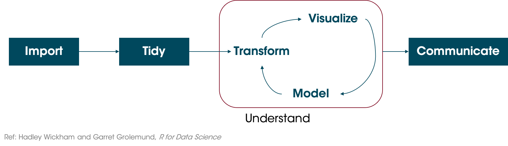
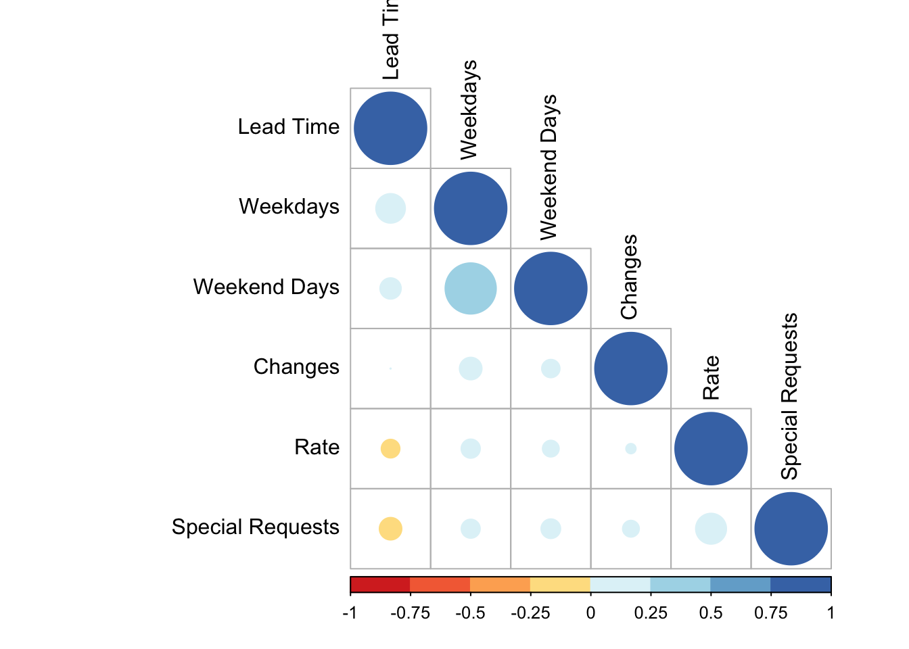
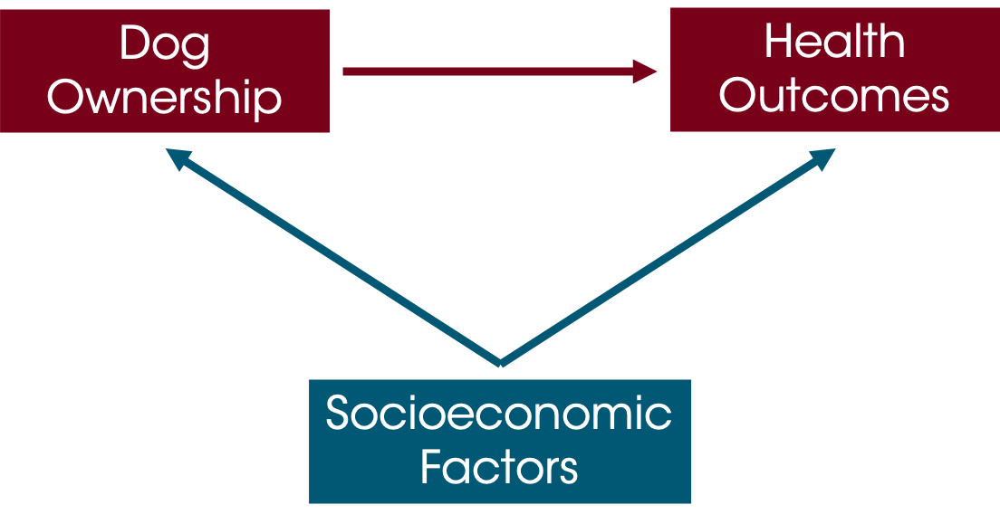
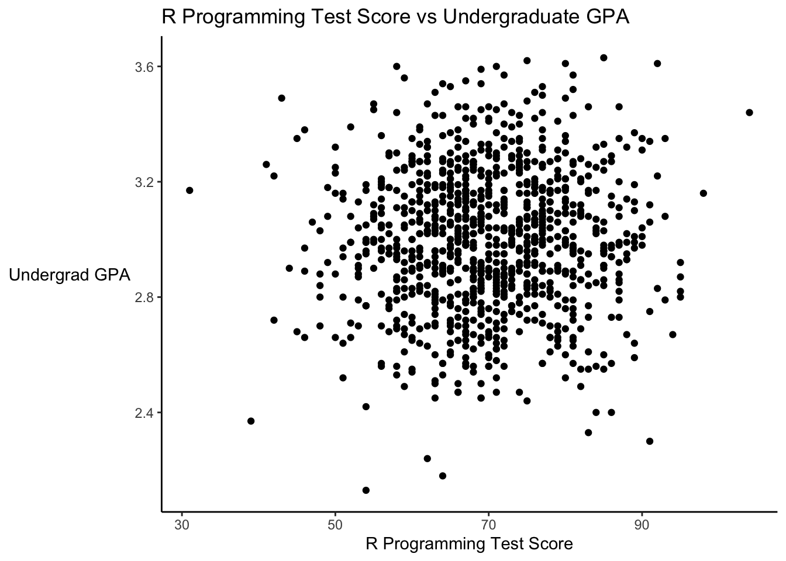
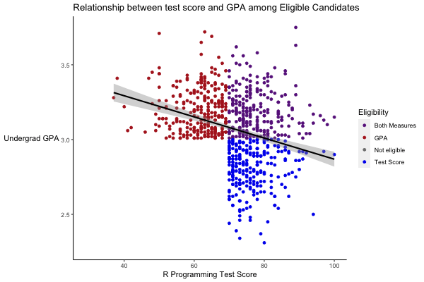
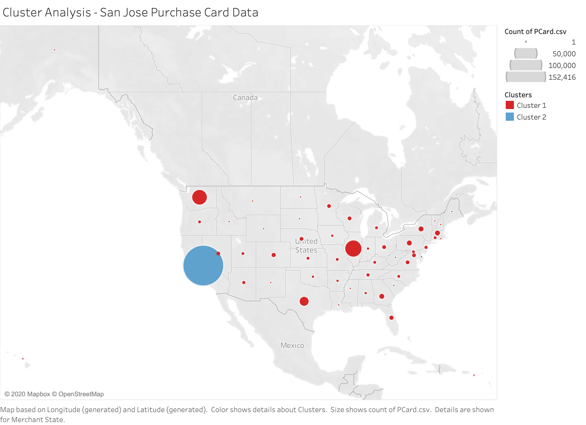

10 Correlation and Regression

### Compare the capabilities of base R vs ggplot
# Load packages. gridExtra package arranges multiple plots in a figure
library(tidyverse)
library(lubridate)
library(scales)
library(gridExtra)
library(ggthemes)
library(knitr)
# Suppress summarise info
options(dplyr.summarise.inform = FALSE)
# Set working directory
setwd("/Volumes/GoogleDrive/My Drive/6. Teaching/IDSC 4210 - Data Visualization/IDSC 4210 Course Notes")
# Load booking data
booking_data <- read_csv("hotel_bookings.csv")
# Filter out erroneous adr
booking_data <- booking_data %>%
filter(adr < 1000)Thinking back to the data science cycle, after we create our visualization we often want to model our data. A model is an abstraction or set of rules that describes how something works.

Let’s look at a scatterplot of lead time vs price again.
### Scatterplot comparing price and how far out a guest booked the stay
# Set seed so that we get the same "random" numbers each time and the plot is reproducible
# You can pick any number for the seed, but to get the same result each time
# you have to use the same seed
set.seed(132)
# Plot a random sample of 800 bookings that weren't complementary (ie, price = 0)
booking_data %>%
filter(adr != 0) %>%
sample_n(size = 800) %>%
ggplot(aes(x = lead_time, y = adr)) +
geom_point(color = "#00759a") +
scale_x_reverse() + # Reverse the x axis so we "count down"
scale_y_continuous(labels=scales::dollar_format())+
labs(x = "Lead Time (Days)",
y = "Average Daily Rate (Price $)",
title = "Average Daily Rate ($) versus Lead Time") +
theme(axis.line = element_line(color = "black"),
axis.title.y = element_text(angle = 0, vjust = 0.5),
panel.background=element_blank(),
panel.grid.minor=element_blank(),
panel.grid.major.y=element_blank(),
panel.grid.major.x=element_blank())
What is the relationship between lead time and price? It would be good to have some way to characterize this relationship.
10.1 Correlation
10.1.1 Correlation Coefficient
Pearson’s correlation coefficient is one of the most common ways to quantify the relationship between two variables; it is a measure of the strength of the linear relationship between two variables. There’s a good explanation of the math on Wikipedia which I won’t repeat here. You also have to be sure that it’s appropriate to use Pearson’s correlation coefficient. Seven assumptions must hold for the results to be valid:
Both variables are continuous (interval or ratio data)
You have measurements on each variable for each observation.
Each observation is independent (unrelated)
There is a linear relationship between the variables
Data are normally distributed (hypothetically you need a bivariate normal); this is subject to some debate.
Variances are homoscedastic (constant variance)
No outliers
Discussion of these outliers is beyond the scope of this class, but it’s important to know that there are assumptions for any of the tests you are performing.
Let’s calculate the correlation coefficient for the data we looked in the scatterplot above, comparing lead time and price.
### Calculate Pearson's Correlation Coefficient between Lead Time and Price
cor(booking_data$lead_time, booking_data$adr)## [1] -0.0656026# Let's look at the correlation when we exclude "free" bookings
# Using the corrr package from tidymodels
# It's a little more user-friendly than the base R function
library(corrr)
booking_data %>%
filter(adr != 0) %>%
select(lead_time, adr) %>%
corrr::correlate(x = .)##
## Correlation method: 'pearson'
## Missing treated using: 'pairwise.complete.obs'## # A tibble: 2 x 3
## term lead_time adr
## <chr> <dbl> <dbl>
## 1 lead_time NA -0.0910
## 2 adr -0.0910 NAWhat does a correlation of -0.06 mean? It implies that, on average, as lead time increases, price decreases slightly (and conversely, as price increases, lead time decreases), but that the relationship is not particularly strong. Correlation can range from -1 to 1; 0 implies no relationship, whereas 1 implies a perfect relationship (the two variables are in “lockstep”). We’ll look at this idea some more when we discuss linear regression.
One particularly powerful visualization tool is the correlation matrix, which presents the correlations among many variables.
### Calculate the corellation matrix for multiple variables
booking_data %>%
select(lead_time,
stays_in_week_nights,
stays_in_weekend_nights) %>%
cor() %>%
round(digits = 2)## lead_time stays_in_week_nights stays_in_weekend_nights
## lead_time 1.00 0.17 0.09
## stays_in_week_nights 0.17 1.00 0.50
## stays_in_weekend_nights 0.09 0.50 1.00We see that the correlation between stays_in_week_nights and the stays_in_weekend_nights is 0.50. This means that guests staying more weeknights also tend to stay more weekend nights. You can look at large numbers of variables this way to help identify variables we might want to explore more. A visual way to do this is with a correlagram…a visual correlation matrix.
The correlagram isn’t something I’d necessarily include in a presentation to the C-suite, but it’s useful for exploratory data analysis.
We’ll use the corrplot package (which you’ll need to install the first time). corrplot takes a correlation matrix and plots it.
### Make a correlation plot or correlagram
# Load the corrplot and RColorBrewer packages
library(corrplot)## corrplot 0.84 loadedlibrary(RColorBrewer)
# Create a corrplot of some of the numeric variables in the hotel bookings dataset
# First, save the correlation matrix
B <- booking_data %>%
select("Lead Time" = lead_time,
Weekdays = stays_in_week_nights,
"Weekend Days" = stays_in_weekend_nights,
Rate = adr,
"Special Requests" = total_of_special_requests,
"Changes" = booking_changes) %>%
cor()
# Then plot it
corrplot(B, type="lower", order="hclust",
tl.col="black",
col=brewer.pal(n=8, name="RdYlBu"))
The smaller, lighter circles indicate a smaller correlation, whereas the bigger stronger circles indicate larger positive or negative correlations.
10.1.1.1 Correlation between a continuous and dichotomous variable
We saw above that Pearson’s correlation coefficient assumes data is continuous. But what about dichotomous variables? Well, if your data is stored as 1s and 0s, your software will calculate it but the assumptions aren’t satisfied.
There are many ways to handle this situation, but the point-biserial correlation coefficient is one way to evaluate this. Let’s look at the point-biserial correlation between lead time and whether or not the guest cancels the booking (in the case of two variables, the math reduces to yield the same result as the Pearson correlation).
### Calculate the point-biserial correlation between lead time and cancellations
cor.test(booking_data$lead_time, booking_data$is_canceled)##
## Pearson's product-moment correlation
##
## data: booking_data$lead_time and booking_data$is_canceled
## t = 105.94, df = 119387, p-value < 2.2e-16
## alternative hypothesis: true correlation is not equal to 0
## 95 percent confidence interval:
## 0.2879394 0.2983094
## sample estimates:
## cor
## 0.293133It looks like bookings further out are more likely to to be cancelled. Good to know! Detailed discussions of different tests by data point are beyond the scope of this class, but it’s worth knowing that these issues are out there.
10.1.1.2 Correlation is not slope
So is the correlation the slope of the relationship? No! Correlation measures the strength of the relationship. Let’s simulate some data and look at why.
### Simulate two datasets, with an X and two Ys and plot them
# X goes from -10 to 10
# y1 = x * 2
# y2 = x
slope_data <- tibble(x = seq(-10, 10)) %>%
mutate(y1 = x,
y2 = x * 2)
# Examine the correlations
# Both correlations are 1 since the relationships are perfectly linear!
cor(slope_data$x, slope_data$y1)## [1] 1cor(slope_data$x, slope_data$y2)## [1] 1# To make graphing easier, lets pivot the data from wide to long format
slope_data <- slope_data %>%
pivot_longer(cols = c("y1", "y2"),
names_to = "Dataset",
names_prefix = "y",
values_to = "y")
# Plot the data
slope_data %>% ggplot(aes(x = x, y = y)) +
geom_point() +
geom_smooth(method = "lm") +
facet_wrap(~ Dataset)## `geom_smooth()` using formula 'y ~ x'
These datasets have different slopes but the correlation for both is 1 because they both have a perfectly linear relationship.
10.1.2 Correlation vs Causation
We are often interested in identifying casual effects. Does X cause Y? Some examples of causal questions (with links to papers that analyze them…if you’re interested):
Does providing a free preview of a book (X) increase sales (Y)?
Does having a pet (X) improve health outcomes (Y)?
We would take actions accordingly. Doctors might recommend that people get pets, publishers might put authors on book covers (or take them off), and we could encourage people to go to college (e.g. by making it free).
So it’s simple, right? Compare X to Y, and call it a day. But not so fast. What is different books are more likely to get previews? Many factors affect how much schooling someone can access. And maybe different people are more or less likely to have a pet. In each of these cases, we cannot simply compare X to Y and claim that our result is the effect of X on Y.
You have probably heard that “correlation is not causation.” The thing is:
"[S]imply finding an association between two variables might be suggestive of a causal effect, but it also might not.
Causal Inference: The Mixtape, Scott Cunningham, pg 15
But even academics who know this well will sometimes slip into language that implies causation. I’ve done this even when I was deliberately trying not to. As humans, we naturally gather information from the world around us, and formulate explanations or make predictions.
10.2 Causal Inference
This is not a class on causal inference, but it’s important to think along these lines and at least ask these questions. Even if you may not have the tools or data to address the limitations of your analysis, it’s important to acknowledge them.
Causal inference is “the leveraging of theory and deep knowledge of institutional details to estimate the impact of events and choices on a given outcome of interest” [Cunningham 2021, pg 4]. In other words, we have to apply both our intuition and the data to estimate the effect of X on Y. The math will ALWAYS give you an answer. Whether it means anything is a separate question.
Let’s think about the earlier example about how pet ownership could affect health, just thinking about dogs for now. Perhaps owning a dog improves health because dogs are sociable, could encourage owners to take daily walks, and it can be beneficial to have something to care for. On the other hand, taking care of pets can be stressful and expensive, and dogs can wake you up at night, interrupting your sleep, so maybe owning a dog negatively impacts health. In any case, we want to know if dog ownership (D) impacts health (H).
“Directed Acyclic Graphs” or DAGs are a tool to help us clarify the thinking around our analysis. So we think that Dog Ownership is affected Health Outcomes.
But could anything else be affecting these things? In particular, we’re concerned about things that could be driving BOTH of these variables. Socioeconomic factors (like income, housing situation, etc) could affect someone’s ability to take care of a dog and their health outcomes.

Unless we control for socioeconomic factors, we can’t really know whether or not dog ownership causes improved health. One approach is a randomized experiment, but we often can’t randomly assign people to own pets (or whatever it is we are analyzing).
For this class, you are not required to make causal inferences (or defend why your results definitively show that X causes Y), but your analyses should try to acknowledge any shortcomings or limitations of your dataset. Especially once you’re in the “real world” it’s valuable to think along these lines.
10.2.1 Resources for Causal Inference
MSBA 6440 (Causal Inference via Econometrics and Experimentation) is an excellent primer class. It is taught in the Fall Semester. If you pursue the MSBA program (here or at another institution), this is one of the classes that I would make sure you understand the “Why” behind. Any applied economics or policy analysis (often in public policy schools like Humphrey) should have a foundational course in causal inference as well.
Some books that are great:
Causal Inference: The Mixtape, by Scott Cunningham is excellent. It is written for masters students as a first primer in causal inference, but sharp undergraduates should be able to work through it. It includes code in R and Stata (and the datasets) so that you can run the examples and analysis as you go along. Best of all, it’s free on Prof Cunningham’s website.
The Book of Why by Pearl and Mackenzie is solid. It helps you really pick apart the assumptions that you are making.
Mastering Metrics by Angrist and Pischke is a little math-heavy but it is approachable. It does not include code that you can run, but its explanations are solid.
10.3 Regression Lines
The math behind regression is beyond the scope of this class (as we’re focused on visualization here and not necessarily whether a particular type of regression is appropriate or informative for a particular dataset and analysis.) There are lots of resources online about how/when to do regression. But regressions are a common way of summarizing a trend in a way that can be incorporated into visuals. We’ll discuss two common methods: linear regression (often called Ordinary Least Squares or OLS) and Loess Smoothing.
10.3.1 Linear Regression
Let’s return to the example of comparing lead time and the price paid.
# Set seed so that we get the same "random" numbers each time and the plot is reproducible
# You can pick any number for the seed, but to get the same result each time
# you have to use the same seed
set.seed(132)
# Plot a random sample of 800 bookings that weren't complementary (ie, price = 0)
booking_data %>%
filter(adr != 0) %>%
sample_n(size = 800) %>%
ggplot(aes(x = lead_time, y = adr)) +
geom_point(color = "#00759a") +
scale_x_reverse() + # Reverse the x axis so we "count down"
scale_y_continuous(labels=scales::dollar_format())+
labs(x = "Lead Time (Days)",
y = "Average Daily Rate (Price $)",
title = "Average Daily Rate ($) versus Lead Time") +
theme(axis.line = element_line(color = "black"),
axis.title.y = element_text(angle = 0, vjust = 0.5),
panel.background=element_blank(),
panel.grid.minor=element_blank(),
panel.grid.major.y=element_blank(),
panel.grid.major.x=element_blank())
The question we ask is “Is lead time associated with ADR?” Linear regression minimizes the sum of squared error (hence its other name, “least squares”).
### Run a linear regression on the data
# Filter out adr = 0 (complementary stays)
# We use the "dot pronoun" since the formula usually comes first
# Save the model as lm_leadtime ("linear model - lead time")
lm_leadtime <- booking_data %>%
filter(adr != 0) %>%
lm(adr ~ lead_time, data = .)
# Display a summary of the model
summary(lm_leadtime)##
## Call:
## lm(formula = adr ~ lead_time, data = .)
##
## Residuals:
## Min 1Q Median 3Q Max
## -106.50 -31.55 -8.05 22.79 402.34
##
## Coefficients:
## Estimate Std. Error t value Pr(>|t|)
## (Intercept) 107.66210 0.19034 565.64 <2e-16 ***
## lead_time -0.03975 0.00127 -31.31 <2e-16 ***
## ---
## Signif. codes: 0 '***' 0.001 '**' 0.01 '*' 0.05 '.' 0.1 ' ' 1
##
## Residual standard error: 46.52 on 117428 degrees of freedom
## Multiple R-squared: 0.008278, Adjusted R-squared: 0.008269
## F-statistic: 980.2 on 1 and 117428 DF, p-value: < 2.2e-16There is a good explanation of each term in this summary here. For this class, we’ll focus on three things…the Estimates of the Coefficients, the P values, and the Adjusted R-squared.
The estimates of the Intercept is the Y intercept, and Pr(>|t|) is the p-value, or the probability of observing a t value greater than or equal this one. 0.05 is a good cut-off, though in the real world we often don’t see p-values that meet this criteria but we still need to make decisions.
The lead_time estimate is the slope…in other words, on average, for each additional day of lead time, price will decrease by $0.039.
Adjusted R-squared estimates what proportion of the variance in the Y variable (ADR or price) is explained by the X variables. This can range from 0 to 1; a value of 0.008 is quite low. In other words, lead time explains a very small proportion of this variance. Not surprising since the correlation was so low!
Let’s plot it. You can add a linear regression line to a ggplot object with the geom_smooth() geom. Specify method = "lm" to get linear regression trendline.
### Scatterplot with a linear regression line
# Plot a random sample of 800 bookings that weren't complementary (ie, price = 0)
booking_data %>%
filter(adr != 0) %>%
sample_n(size = 800) %>%
ggplot(aes(x = lead_time, y = adr)) +
geom_point(color = "#00759a") +
geom_smooth(method = "lm", color = "black") +
scale_x_reverse() + # Reverse the x axis so we "count down"
scale_y_continuous(labels=scales::dollar_format())+
labs(x = "Lead Time (Days)",
y = "Average Daily Rate (Price $)",
title = "Average Daily Rate ($) versus Lead Time") +
theme(axis.line = element_line(color = "black"),
axis.title.y = element_text(angle = 0, vjust = 0.5),
panel.background=element_blank(),
panel.grid.minor=element_blank(),
panel.grid.major.y=element_blank(),
panel.grid.major.x=element_blank())## `geom_smooth()` using formula 'y ~ x'
10.3.2 Loess Smoothing
Another common trendline is a loess smoother; in fact, it’s the default method used by geom_smooth. A benefit is loess is that you do not have to specify whether the function will be linear, quadratic, exponential, etc. For details on loess, you can read the Wikipedia article (but the math is beyond the scope of this class).
### Scatterplot with a loess regression line
# Plot a random sample of 800 bookings that weren't complementary (ie, price = 0)
booking_data %>%
filter(adr != 0) %>%
sample_n(size = 800) %>%
ggplot(aes(x = lead_time, y = adr)) +
geom_point(color = "#00759a") +
geom_smooth(method = "loess", color = "black") +
scale_x_reverse() + # Reverse the x axis so we "count down"
scale_y_continuous(labels=scales::dollar_format())+
labs(x = "Lead Time (Days)",
y = "Average Daily Rate (Price $)",
title = "Average Daily Rate ($) versus Lead Time") +
theme(axis.line = element_line(color = "black"),
axis.title.y = element_text(angle = 0, vjust = 0.5),
panel.background=element_blank(),
panel.grid.minor=element_blank(),
panel.grid.major.y=element_blank(),
panel.grid.major.x=element_blank())## `geom_smooth()` using formula 'y ~ x'
Very interesting! We see that price seems to increase over time and then they go down again (on average) right before the stay.
10.4 Warning: Berkson’s Paradox
Regression analysis is incredibly powerful, but it can be tempting to take the results of a regression analysis and interpret those estimates as the ground truth. But there are many cases where the way you are analyzing the data or the observations comprising your dataset mean that the relationships you observe are spurious.
Berkson’s Paradox is a type of sampling or selection bias where a set of data appears to show a relationship between two variables where in fact none exists.
Suppose there is a test that measures students’ abilities in R programming, and further suppose that how students perform is unrelated to their GPA. Let’s simulate this data and plot it.
### Simulate data for the test and GPA
# Set seed so we get the same results every time even though we generate random numbers
set.seed(75)
# Generate a dataset by simulating some data
# GPA is normally distributed with a mean of 3, standard deviation of 0.25
# Test score is normally distributed with mean of 70, standard deviation of 10
# Generate 1000 points, round GPA to 2 decimal places and test score to closest integer
student_scores <- tibble(GPA = round(rnorm(1000, mean = 3.0, sd = 0.25), 2),
test_score = round(rnorm(1000, mean = 70, sd = 10), 0))
# Plot the data
student_scores %>%
ggplot(aes(x = test_score, y = GPA)) +
geom_point() +
labs(x = "R Programming Test Score",
y = "Undergrad GPA",
title = "R Programming Test Score vs Undergraduate GPA") +
theme(axis.line = element_line(color = "black"),
axis.title.y = element_text(angle = 0, vjust = 0.5),
panel.background=element_blank(),
panel.grid.minor=element_blank(),
panel.grid.major.y=element_blank(),
panel.grid.major.x=element_blank())
Let’s look at the correlation of this data.
### Check correlation of test score vs GPA
cor.test(student_scores$GPA, student_scores$test_score)##
## Pearson's product-moment correlation
##
## data: student_scores$GPA and student_scores$test_score
## t = 1.2896, df = 998, p-value = 0.1975
## alternative hypothesis: true correlation is not equal to 0
## 95 percent confidence interval:
## -0.02125938 0.10252131
## sample estimates:
## cor
## 0.04078745The correlation is very low and not statistically significant. It’s basically 0…there is no apparent relationship between these. Remember, we specifically constructed these two variables to have NO relationship…each was randomly drawn.
Now suppose some data analytics company decides to hire people who have either an above average GPA or an above average test score (or both). Let’s add a variable to signify this, and then plot the new data. We’ll include a linear regression line.
### Add a signifier for above average scores and plot "eligible" candidates
student_scores <- student_scores %>%
mutate(hiring_eligibility = case_when(
GPA > mean(GPA) & test_score > mean(test_score) ~ "Both Measures",
GPA > mean(GPA) ~ "GPA",
test_score > mean(test_score) ~ "Test Score",
TRUE ~ "Not eligible"))
# Plot the revised data, with color to signify eligibility
student_scores %>%
ggplot(aes(x = test_score, y = GPA)) +
geom_point(aes(color = hiring_eligibility)) +
geom_smooth(method = "lm", color = "black") +
scale_color_manual(values = c("GPA" = "firebrick", "Test Score" = "blue2", "Both Measures" = "darkorchid4", "Not eligible" = "gray50")) +
labs(x = "R Programming Test Score",
y = "Undergrad GPA",
title = "R Programming Test Score vs Undergraduate GPA",
color = "Eligibility") +
theme(axis.line = element_line(color = "black"),
axis.title.y = element_text(angle = 0, vjust = 0.5),
panel.background=element_blank(),
panel.grid.minor=element_blank(),
panel.grid.major.y=element_blank(),
panel.grid.major.x=element_blank())## `geom_smooth()` using formula 'y ~ x'
The linear regression line is practically flat…as it should be. We found that there was essentially no correlation (because we created this data to not be correlated).
So suppose this data analytics company hires all of the eligible employees. And then looks at their employee records, and says, “We find that students who do well on the test had lower GPAs on average. And vice versa, those with high GPAs do poorly on the test.” How can this be. Well, remember they ONLY hired the people who met their eligibility criteria. Let’s look at the plot again, this time leaving out people who weren’t eligible to be hired.
# Plot only the employees eligible to be hired
student_scores %>%
filter(hiring_eligibility != "Not eligible") %>%
ggplot(aes(x = test_score, y = GPA)) +
geom_point(aes(color = hiring_eligibility)) +
geom_smooth(method = "lm", color = "black") +
scale_color_manual(values = c("GPA" = "firebrick", "Test Score" = "blue2", "Both Measures" = "darkorchid4", "Not eligible" = "gray50")) +
labs(x = "R Programming Test Score",
y = "Undergrad GPA",
title = "R Programming Test Score vs Undergraduate GPA") +
theme(axis.line = element_line(color = "black"),
axis.title.y = element_text(angle = 0, vjust = 0.5),
panel.background=element_blank(),
panel.grid.minor=element_blank(),
panel.grid.major.y=element_blank(),
panel.grid.major.x=element_blank())## `geom_smooth()` using formula 'y ~ x'
# Look at the correlation
student_scores %>%
filter(hiring_eligibility != "Not eligible") %>%
select(GPA, test_score) %>%
cor()## GPA test_score
## GPA 1.0000000 -0.2849255
## test_score -0.2849255 1.0000000Among this set, we now see a strong downward trend, and the correlation is quite strong. Whenever we interpret regression results, or any analysis really, we need to think about where the data come from, and whether the data answer the question we think they answer.
### Animate the plot
## Load packages
library(gganimate)
library(tidyverse)
library(transformr)
library(gifski)
### Simulate Data
student_scores <- tibble(GPA = round(rnorm(1000, mean = 3.0, sd = 0.25), 2),
test_score = round(rnorm(1000, mean = 70, sd = 10), 0))
### Add a signifier for above average scores and plot "eligible" candidates
student_scores <- student_scores %>%
mutate(hiring_eligibility = case_when(
GPA > mean(GPA) & test_score > mean(test_score) ~ "Both Measures",
GPA > mean(GPA) ~ "GPA",
test_score > mean(test_score) ~ "Test Score",
TRUE ~ "Not eligible"),
state = "Everyone")
### Duplicate scores without eligible candidates
student_scores_eligible <- student_scores %>%
filter(hiring_eligibility != "Not eligible") %>%
mutate(state = "Eligible Candidates")
student_scores <- rbind(student_scores, student_scores_eligible)
# Plot the revised data, with color to signify eligibility
p <- student_scores %>%
ggplot(aes(x = test_score, y = GPA)) +
geom_point(aes(color = hiring_eligibility)) +
geom_smooth(method = "lm", color = "black") +
scale_color_manual(values = c("GPA" = "firebrick", "Test Score" = "blue2", "Both Measures" = "darkorchid4", "Not eligible" = "gray50")) +
labs(x = "R Programming Test Score",
y = "Undergrad GPA",
title = "R Programming Test Score vs Undergraduate GPA",
color = "Eligibility") +
theme(axis.line = element_line(color = "black"),
axis.title.y = element_text(angle = 0, vjust = 0.5),
panel.background=element_blank(),
panel.grid.minor=element_blank(),
panel.grid.major.y=element_blank(),
panel.grid.major.x=element_blank())
### Make animated plot
anim <- p +
transition_states(state,
state_length = 3,
transition_length = 2) +
ggtitle('Relationship between test score and GPA among {closest_state}') +
exit_shrink()
animate(anim, duration = 5, fps = 20, width = 600, height = 400, renderer = gifski_renderer())
10.5 Advanced Topics: Machine Learning
Machine learning is an incredibly broad topic, but it’s increasingly used across industries. People spend their whole careers on niche topics within machine learning. Machine learning is technically beyond the scope of this class, but we’ll cover two basic methods to at least get a flavor for how it can be used.
10.5.1 Classification Tree
Classification trees are relatively simple models, but they have the benefit of being very interpretable, and can be quite effective for simple data. Suppose we want to predict whether or not a guest is going to cancel their stay or not.
R has a very powerful machine learning library called caret. Let’s build a classification tree to try to predict if a guest is going to cancel or not…we might want to use this data to determine whether or guest has to pay a deposit.
Note that I have to pull out the reservation_status variable because it is perfectly collinear with the cancellations! (I actually forgot to do this at first and the computer, very correctly, identified that it could just see whether the guest checked out. And if they had, it knew they didn’t cancel!)
### Build a classification tree for booking cancellations.
# Load the caret machine learning package
suppressMessages(library(caret))
# Only include lines without missing values and remove the reservation status variable
training_data <- booking_data[complete.cases(booking_data), ] %>%
mutate(is_canceled = as.factor(is_canceled),
is_repeated_guest = as.factor(is_repeated_guest),
previous_bookings_not_canceled = as.factor(previous_bookings_not_canceled),
Portugal = country == "PRT") %>%
select(-reservation_status,
-country,
-assigned_room_type,
-deposit_type)
# Next, create an index to decide which data goes in our "test" set and which in the "train" set
# This is standard practice for machine learning
index = createDataPartition(y = training_data$is_canceled, p = 0.6, list = FALSE)
train.set <- training_data[index, ]## Warning: The `i` argument of ``[`()` can't be a matrix as of tibble 3.0.0.
## Convert to a vector.
## This warning is displayed once every 8 hours.
## Call `lifecycle::last_warnings()` to see where this warning was generated.test.set <- training_data[-index, ] %>%
filter(market_segment %in% unique(train.set$market_segment),
reserved_room_type %in% unique(train.set$reserved_room_type),
agent %in% unique(train.set$agent))
# Train the model and save it as "cancellations.tree"
cancellations.tree <- train(is_canceled ~ .,
data = train.set,
method = "rpart",
trControl = trainControl(method = "cv"),
na.action = na.pass)
# Plot the tree
# Load package rattle to plot a "fancy picture" of the tree
suppressMessages(library(rattle))
# Plot the tree
fancyRpartPlot(cancellations.tree$finalModel)
Let’s see how well the model performs.
### Check the cancellations.tree model performance
# Predict the values for on the hold-out test set
cancellations.pred <- predict(cancellations.tree, newdata = test.set)
# Generate the "confusion matrix"
table(cancellations.pred, test.set$is_canceled)##
## cancellations.pred 0 1
## 0 24995 5030
## 1 5039 12654# Check the error rate
error.rate = round(mean(cancellations.pred != test.set$is_canceled), 2)
error.rate## [1] 0.21Only a 19% error rate! Not bad for a fairly simple model. Would this model outperform our current policy regarding reservations (assuming all the same people would still book a room)?
### Look at the deposits the hotel has required from guests that cancel
booking_data %>%
filter(is_canceled == 1) %>%
group_by(deposit_type) %>%
summarize(count = n())## # A tibble: 3 x 2
## deposit_type count
## * <chr> <int>
## 1 No Deposit 29694
## 2 Non Refund 14493
## 3 Refundable 36We allow people who cancel to make reservations without deposits twice as often as we request a deposit. So we’re only “accurate” 1/3 of the time under the current policy…maybe the machine learning model could help us out. Of course, we need to think about other effects, maybe people won’t book, etc. It’s complicated! (Perhaps we should just ask for a $5 deposit…that would bring in $150k!)
10.5.2 Cluster Analysis
Cluster analysis groups observations into a number of clusters based on similarity. It’s commonly used for things like market segmentation.
Let’s do cluster analysis in Tableau. Let’s look at the San Jose Purchase Card Data. I’ve asked Tableau to give me 2 clusters. Let’s look at how it clusters the transactions when we plot them on a map. The only information I’ve given Tableau to cluster on is the purchase amount and the state. Remember, Tableau knows nothing about where this data was collected, who the city of San Jose is, etc. But the clusters have a distinct, real-world meaning…in-state vs out-of-state purchases!
